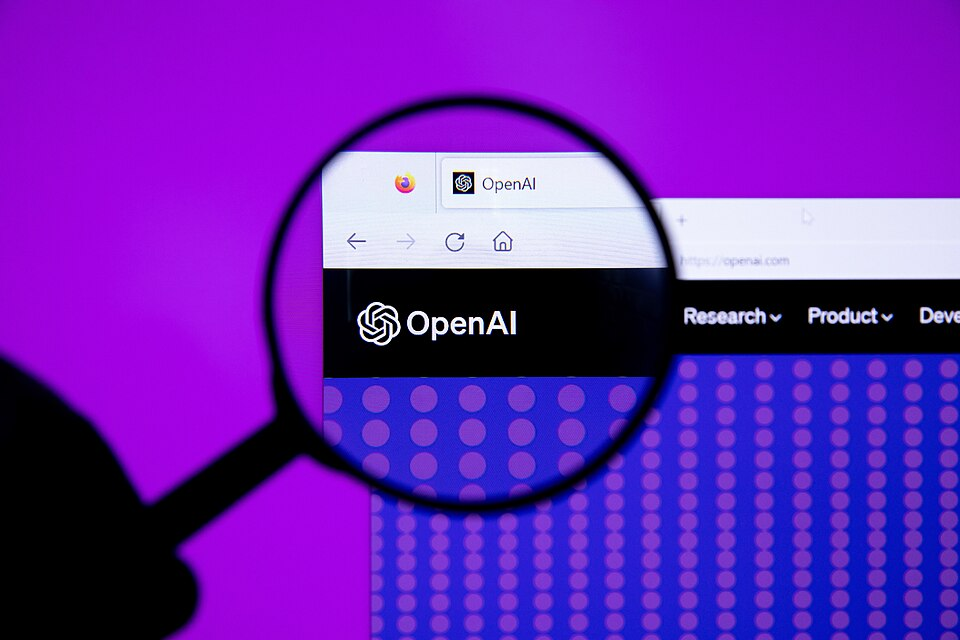

OpenAI首席财务官Sarah Friar。图片来源，CNBC Squawk Box节目截图
Anthropic营收反超了，估值只有OpenAI一半
8520亿美元估值，400亿美元年化收入，2027年挂牌。
8月19日，OpenAI首席财务官Sarah Friar在全员大会上把上市时间表挑明了。公司将在2027年成为上市公司，如果业务继续加速，还可能更早。6月，OpenAI已经向美国证监会秘密递交了招股文件。
这场大会最有意思的，其实不是时间表本身。是Friar安慰员工的那个说法。她说就算Anthropic比我们早上市也不用慌，对方可能几周内就公开文件、9月挂牌，这没问题，我们按自己的节奏走。
一家估值8500亿美元的公司，需要专门安抚员工别怕竞争对手先敲钟。
这个画面本身就说明，AI第一股的争夺，比外面看到的焦灼得多。
先看一组扎眼的数字
把两家公司最新披露的经营数据摆在一起，你会发现一个很多人还没反应过来的事实。
| 指标 | OpenAI | Anthropic |
|---|---|---|
| 最新估值 | 8520亿美元（3月融资后） | 3800亿美元（2月G轮） |
| 年化营收运行率 | 突破400亿美元 | 650亿美元（7月底） |
| 最新季度营收 | 67亿美元（Q2，环比+18%） | 约115亿美元（Q2初步数据） |
| 最近一轮融资 | 1220亿美元（3月） | 300亿美元（2月） |
| IPO状态 | 已秘密递表，目标2027 | 已秘密递表，或9月挂牌 |
Anthropic的年化营收是OpenAI的1.6倍，单季营收是对方的1.7倍。但估值只有对方的44%。
营收反超，估值只有一半
私有市场给这两家公司的定价，出现了一道巨大的裂缝。
这道裂缝怎么理解，是这篇文章真正想聊的事。
营收是怎么被反超的
先说Anthropic这边。
7月底，Anthropic的年化营收运行率达到650亿美元，是一年前的七倍。一年七倍，这个增速放在整个硅谷历史上都罕见。
驱动因素很清楚。Claude在编程这个场景里几乎成了开发者的默认选项，企业客户愿意为模型质量付溢价。Q2初步营收约115亿美元，一个季度就干到了OpenAI的1.7倍。市场甚至预测，Anthropic成为2026年最大IPO的概率有44%。
OpenAI那边，Q2营收67亿美元，环比增长18%，年化运行率突破400亿美元。增速不差，但体量被反超了。
Friar在全员会上给员工看的数字是，本季度至今整体年化营收增长35%，企业级业务增长50%，AI编程和办公产品的周活用户突破2000万。
把数字翻译成生意，你会发现这两家公司已经不是同一种公司了。
OpenAI，吃规模
核心资产 ChatGPT消费级入口
收入结构 订阅+流量变现
估值逻辑 21倍年化营收
赌的是 下一代流量分发中心
Anthropic，吃质量
核心资产 企业客户+编程场景
收入结构 API+企业订阅
估值逻辑 5.8倍年化营收
赌的是 企业级AI的利润率
一个靠ChatGPT的入口地位收订阅费，一个靠企业客户的深度绑定赚API钱。私有市场给OpenAI的定价是年化营收的21倍，给Anthropic只有5.8倍。
市场在赌什么？赌入口。赌ChatGPT成为AI时代的流量分发中心，赌今天的订阅用户是明天的生态护城河。
但这个赌注有个前提，消费级入口的变现效率，得追得上企业级的赚钱速度。现在看，还没追上。
为什么是现在定时间表
第二个问题，OpenAI为什么挑这个时候把时间表挑明。
时间往回倒一个月，OpenAI的人事地震就没停过。营收负责人Denise Dresser任职八个月走人，服务公司八年的元老Brad Lightcap宣布离开，产品业务负责人Fidji Simo七月卸任。总裁Brockman出来灭火，说人事流动并没有特别异常，只是公司处在聚光灯下，每次变动都被过度审视。
话是这么说。但IPO前夜核心高管接连出走，怎么看都算不上正常。

OpenAI。图片来源，公开资料
我觉得时间表至少有三层用意。
第一层，稳军心。给早期员工一个明确的退出预期，期权才有定价的锚。人心里有了日期，就不容易跑。
第二层，不缺钱，所以可以挑窗口。1220亿美元融资3月就到位了，弹药充足。Friar那句IPO不是终点、只是又一次融资，是说给市场听的，潜台词是我们不着急，着急的是你们。
第三层，也是最微妙的，Anthropic 9月可能挂牌。如果对方上市表现好，企业级AI的估值基准立起来，OpenAI的入口故事反而更好讲。如果对方遇冷，OpenAI再上，就是往枪口上撞。定一个2027年的时间表，等于把主动权先攥在自己手里。
一个容易被忽略的细节
Friar特意告诉员工，Anthropic几周内可能公开保密文件、9月上市，这没问题。一家公司的CFO在内部大会上主动聊竞争对手的IPO节奏，这种事不常见。它说明OpenAI内部对这件事的真实焦虑程度，比对外口径高得多。
8520亿到底贵不贵
回到估值本身。
8520亿美元，是3月那轮融资的价格，投资方里有亚马逊、英伟达、软银。按400亿美元年化收入算，21倍的市销率。作为对照，Anthropic是5.8倍。
贵不贵，取决于你信哪个故事。
如果信入口故事，ChatGPT是全球用户量最大的AI产品，编程和办公产品周活刚破2000万，企业级增速50%还在爬坡，那21倍是给未来的生态定价，不算离谱。当年亚马逊、谷歌上市时，市销率也都高得让华尔街看不懂。
如果信现金流故事，那问题就来了。训练开支和推理成本是两个无底洞，OpenAI至今没有公开过毛利结构。私有市场可以不为难你，招股书不行。投资者会拿着放大镜找每一个数字，8500亿的估值要在公开市场找到接盘的人，得先回答钱从哪来、到哪去。
这也是为什么我说，Anthropic先上市对OpenAI是好事。对方先把企业级AI的市销率锚定下来，不管锚在6倍还是10倍，OpenAI的21倍都有了谈判的参照物。
中国这边在发生什么
同一时间，国内的AI资本故事也在换剧本。
DeepSeek传闻已久的首轮外部融资，市场消息说规模约70亿美元，投后估值最高590亿美元。腾讯、宁德时代入局，梁文锋个人出资200亿人民币保控制权。这家坚持三年不拿外部钱的公司，终于开了口子。消息还没官方确认，但方向已经清楚。
智谱和MiniMax已经登陆港股。2026年一季度，国内通用大模型融资额同比下滑72%，钱在向头部集中。
中美两边其实是同一个趋势。热钱退潮，头部吸金，上市窗口打开。AI公司从讲故事，进入交作业的阶段。
普通人该盯什么
如果你关心这波AI资本潮，有三个信号比OpenAI哪天敲钟重要。
第一，Anthropic的IPO定价。如果9月真挂牌，看首日市销率。它是AI企业级模式的第一份公开成绩单，会直接校准整个行业的估值锚。
第二，OpenAI招股书里的成本结构。400亿年化收入的背后，推理成本和训练开支吃掉多少毛利，这是私有市场从来不肯透露的数字，也是8500亿估值能不能站住的底座。
第三，ChatGPT订阅收入的增长曲线。消费级入口的变现效率，决定入口故事是远见还是泡沫。
我目前的看法是，OpenAI会按2027年的节奏走，不抢9月的窗口。它需要Anthropic先把企业级的定价基准立起来，自己再讲入口的溢价。也可能我错了，如果Anthropic上市大热，OpenAI面对的估值压力只会更大。
写在最后
写到这里，想起一件旧事。
2004年谷歌上市，IPO估值约230亿美元，华尔街一片喊贵。二十年过去，当年嫌贵的人错过了后来四十倍的涨幅。当然，2000年互联网泡沫破灭也就在眼前，同样的剧本，不同的结局，区别只在基本面。
AI第一股的争夺没有输家，但公开市场的考卷，比私有市场残酷得多。私有市场可以为一个故事定价，公开市场只为一串数字定价。
估值可以讲故事，招股书只能讲数字。
2027年，或者更早。到时候见分晓。
谢谢你看我的文章。
信息来源，CNBC、华尔街日报、腾讯新闻、财联社、凤凰网、证券时报、界面新闻、AI HOT。财务数据为公开报道口径，未经公司审计确认；DeepSeek融资为市场消息，以官方披露为准。本文不构成任何投资建议。